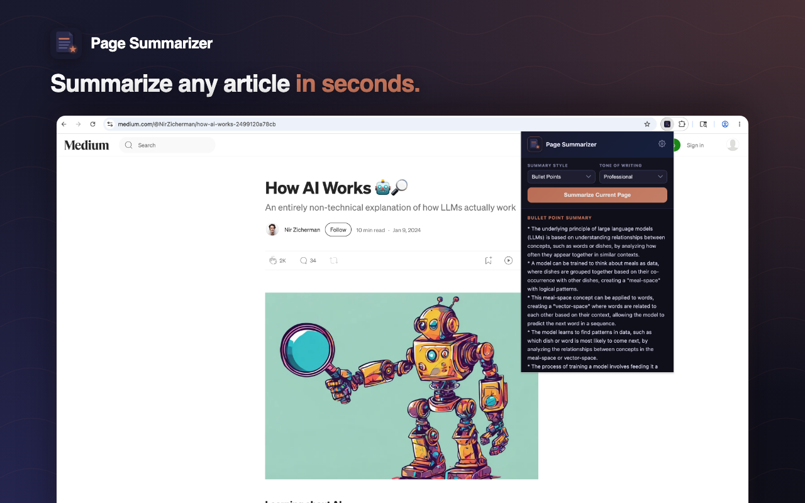
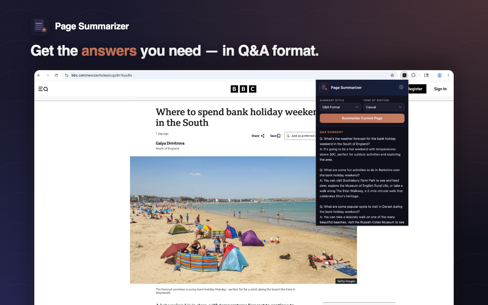
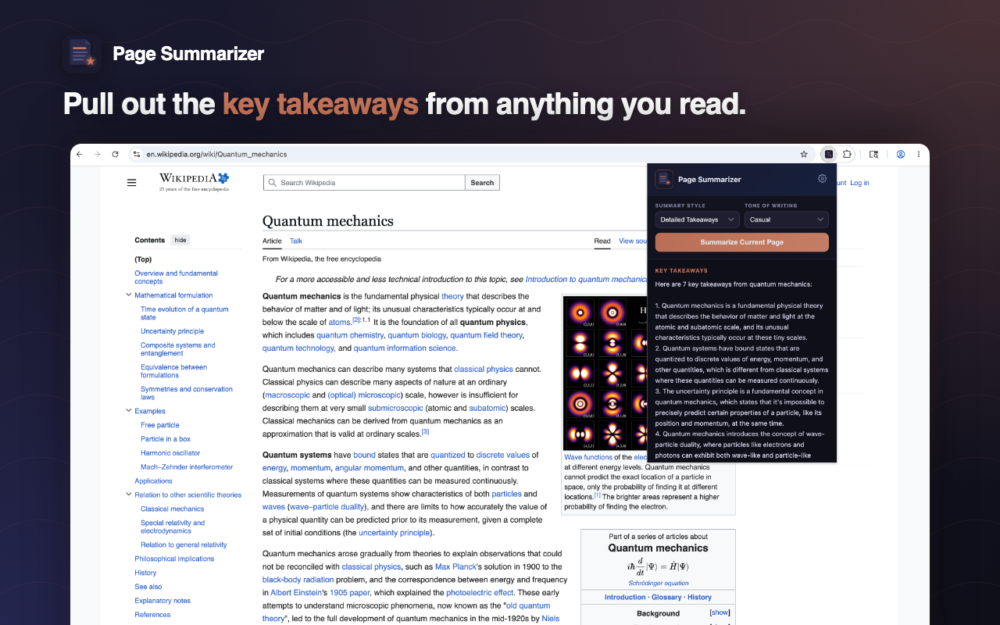
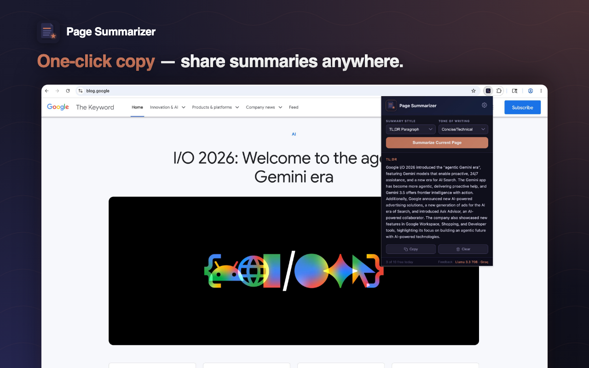
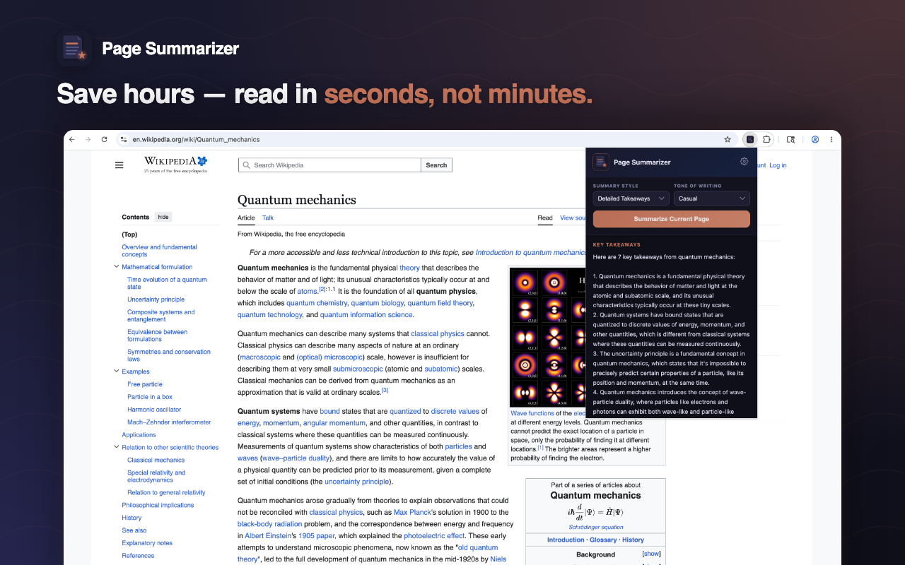

AI-powered summaries for any webpage. Bullet points, TL;DR, key takeaways, or Q&A — pick how you want to read.

Four formats, four tones, one click.
Click the extension, pick your style, get a summary in under 2 seconds. No copy-paste, no tab switching.
Bullet points for scanning, TL;DR for a quick read, key takeaways for action items, or Q&A format for specific answers.
Professional, casual, technical, or ELI5. Same article, four very different summaries — pick what fits.
Your article text is used only to generate the summary and is never stored on our servers. No tracking, no ads.
10 free summaries every day. No sign-up, no account, no credit card. Just install and use.
Power user? Add your own free Groq or OpenRouter API key in Settings for unlimited summaries.
Add Page Summarizer to Chrome with one click. No account needed.
News, Medium, Wikipedia, research papers, blogs — anything readable on the web.
Pick a style and tone, hit the button. Your summary appears in 1–2 seconds.
Real summaries on real articles.




Yes. 10 free summaries per day, no sign-up. If you need unlimited, add your own free Groq or OpenRouter API key in Settings.
Llama 3.3 70B — one of the most capable open-source models — running on Groq's LPU hardware for sub-2-second responses.
No. Article text is sent only to generate the summary and is never retained. We collect anonymous usage events (style, tone, hashed IP) to monitor errors — nothing personally identifying.
Any regular webpage — news articles, blog posts, research papers, Wikipedia, Medium, and so on. It does not work on chrome:// pages or the Chrome Web Store itself.
You get 10 summaries per day on the shared free backend. It resets at midnight (your local time). The counter is shown in the extension popup.
Get a free API key from Groq or OpenRouter, paste it into the extension's Settings page, and you're using your own quota — no limit on our end.
Install Page Summarizer and stop drowning in long-form articles.
Add to Chrome — Free